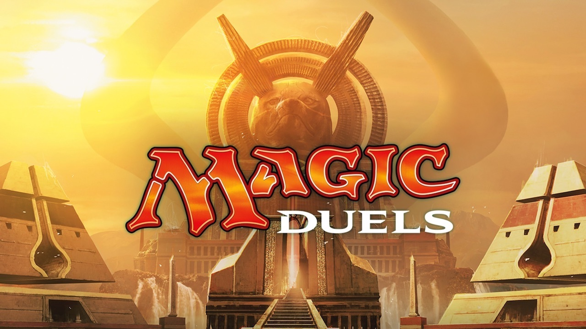
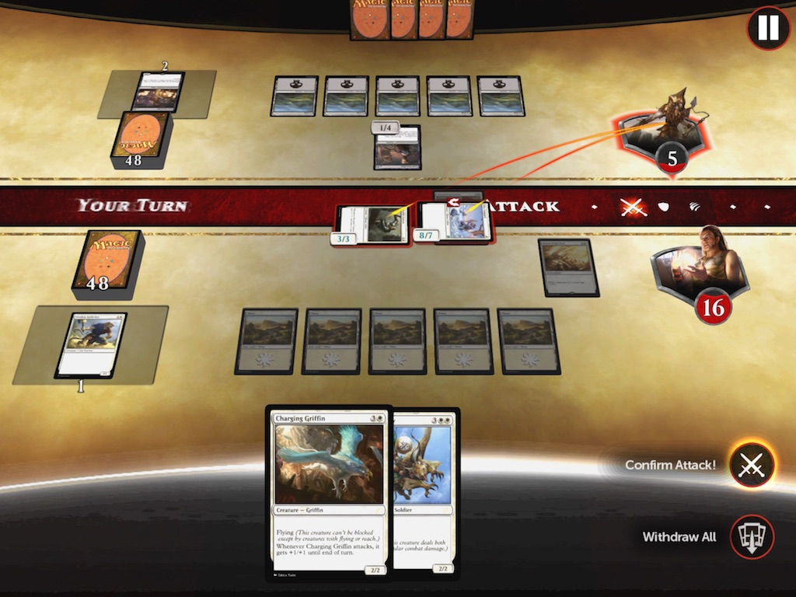
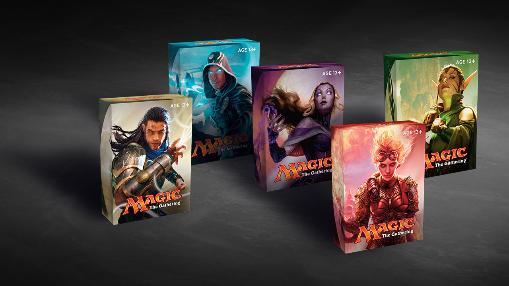

26 listopada 2017
Po krótkim wstępie opisującym czym jest Magic: the Gathering i z czym go się je, pora na najważniejsze pytanie, jakie może postawić sobie początkujący Planeswalker: Jak zacząć? Obecnie jest to zdecydowanie łatwiejsze niż na początku mojej przygody z Medżikiem (czyli dobre kilkanaście lat temu, gdzieś na przełomie tysiącleci). Dla zupełnie "zielonych" istnieją dziś dwa proste sposoby i, co najważniejsze, oba są darmowe.

Po pierwsze, możemy skorzystać z uproszczonej elektronicznej wersji karcianki Magic Duels, dostępnej na PC, iOS i Xbox One. O samej grze wypowiem się niestety negatywnie: typowe free-to-play a raczej pay-to-win, z paczkami zawierającymi losowe karty, gdzie im więcej zapłacimy, tym większe mamy szanse trafienia lepszych kart, przez co nasza talia będzie mieć przewagę nad tą drugiego gracza. Jednego jednak nie można Duelsom odmówić – doskonałego samouczka, który za rączkę prowadzi nowego gracza, stopniowo komplikuje zasady gry i za pomocą kampanii single player uczy bardziej zaawansowanych strategii.
Magic Duels w trybie dla pojedynczego gracza przyda się nowicjuszom, którzy bez czytania instrukcji będą mogli poznać podstawowe zasady gry. Szczególnie poleciłbym też elektronicznego Medżika tym, którzy mają problemy ze znalezieniem drugiego chętnego do grania w tradycyjne karty. Należy jednak pamiętać, żeby nie marnować pieniędzy na kupno wirtualnych boosterów. Duelsy nie mają żadnego mechanizmu wymiany z innymi graczami, więc cała kasa będzie wyrzucona w błoto. Co innego w przypadku fizycznych kart, które zawsze można odsprzedać, gdy gra już nam się znudzi.

Dla przyzwoitości wspomnę jeszcze, że poprzednia edycja tej gry, czyli MtG: Duels of the Planeswalkers, zadebiutowała w roku 2009, a później doczekała się kilku reedycji w latach 2012-2015. Wszystkie były co prawda płatne, ale za to nie zawierały mikrotransakcji z dodatkowymi paczkami losowo dobranych kart. Były dostępne również na PlayStation 3 i Xboxa 360.
Drugi sposób na darmowe wypróbowanie Magic: the Gathering będzie wymagał wyjścia ze swojej nerdowskiej piwnicy i udania się do sklepu z grami planszowymi, karcianymi, itp. Sklepy, które bliżej współpracują z producentem Medżika, firmą Wizards of the Coast, organizują turnieje, otrzymują także co jakiś czas zestawy próbne do darmowej dystrybucji wśród nowych graczy. Aktualną listę takich miejsc można znaleźć na oficjalnej stronie Wizardsów. Jeśli mieszkacie w większym mieście, z pewnością przynajmniej jeden z takich sklepów będzie w waszej okolicy.

Na miejscu bez problemu znajdziecie też bardziej zaawansowanych graczy, którzy wytłumaczą zasady gry, pomogą zbudować talię z posiadanych kart, z którymi także będziecie mogli zagrać dla rozrywki i przy okazji czegoś się nauczyć, zanim wybierzecie się na pierwszy turniej.
Same gratisowe talie nie przedstawiają szczególnej wartości materialnej. Nie pozwolą też wziąć udziału w turnieju z innymi graczami. Wystarczą jednak do nauki. Mając dwa takie zestawy można ze znajomym rozegrać kilka gier, co pozwoli zadecydować czy chcemy dalej się w to bawić. Na koniec małe ostrzeżenie: Magic na prawdę bardzo wciąga. A jeśli już zaczniecie grać, będzie wiązać się to z ciągłymi wydatkami na nowe karty.